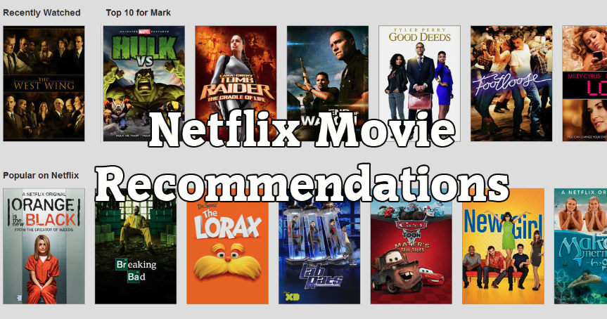
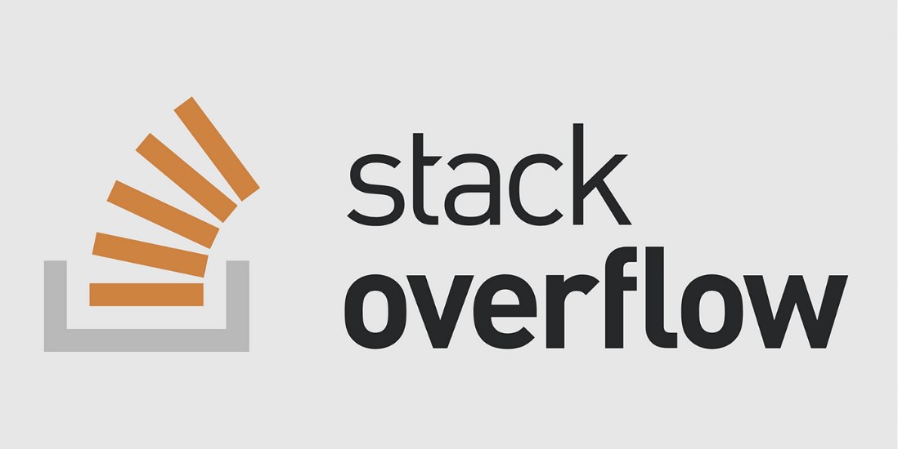

The Netflix case study focused on improving movie recommendations using machine learning algorithms like KNN, SVD, and XGBoost. Various models were tested, and RMSE was used as the evaluation metric. The case study aimed to enhance Netflix's recommendation accuracy by minimizing prediction errors, leading to significant improvements in prediction performance.


This project focuses on predicting tags for StackOverflow questions using machine learning models such as SGD Classifier, Logistic Regression, and MLkNN, leveraging TF-IDF and CountVectorizer for feature extraction and multilabel classification .
SGD Classifier
Logistic Regression
MLkNN
Data Preprocessing
Exploratory Data Analysis
TF-IDF
Multilabel Classification
Python
Scikit-learn
This project forecasts Walmart store sales using Random Forest, XGBoost, FB Prophet, and SARIMA, combining time series analysis with machine learning to improve predictive accuracy for holiday periods and promotions, the final model ranked 20th on Kaggle.
Random Forest
XGBoost
FB Prophet
SARIMA
Feature Engineering
Time Series Analysis
Python
Scikit-learn
Pandas

This project predicts taxi demand in New York City by analyzing taxi trip records from 2015 and 2016. The project segments pickup locations and predicts demand in different regions, improving transportation efficiency and resource allocation.
K-Means
MiniBatch K-Means
Random Forest
XGBoost
Feature Engineering
Time Series Analysis
Python
Dask
Seaborn
This project predicts missing links in a social network graph for Facebook friend recommendations. It applies link prediction algorithms on a directed graph of Facebook connections to recommend potential friendships
Jaccard Similarity
Cosine Similarity
PageRank
Katz Centrality
SVD Features
NetworkX
Python
Scikit-learn

This case study involves extracting image features from ASM files and byte-level n-gram features to classify malware binaries. Machine learning models like Random Forest and XGBoost were used to improve malware detection accuracy. Feature selection techniques and visualization methods were applied to optimize prediction performance in identifying malicious software
Bigram Features
Image Feature Extraction
Random Forest
XGBoost
Multithreading
Python
Scikit-learn
This project identifies duplicate questions on Quora by analyzing question pairs to predict whether they are similar. It applies NLP techniques and advanced feature engineering. Various machine learning models like XGBoost and Logistic Regression are used to classify the question pairs.
TF-IDF
Fuzzy Matching
Stopword Removal
Levenshtein Distance
XGBoost
Logistic Regression
Feature Engineering
Python
Scikit-learn